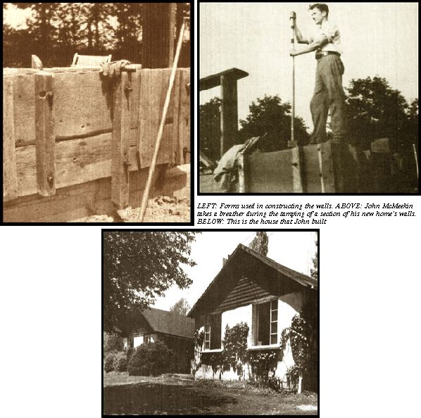
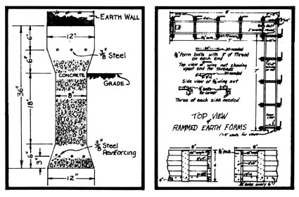
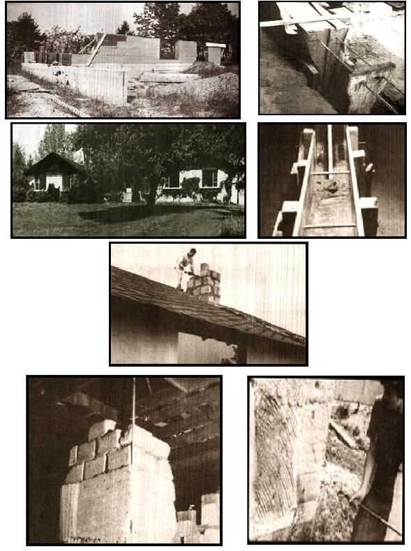

Back in the 40's I was considered an oddball. I wore a beard-revolutionary then-and I started, by myself, to build a house out of (of all things) rammed earth. People wondered about me.
Today-as a V.P. and corporation director-I appear Establishment, and my home doesn't look unusual either. It hugs a hilltop landscape, it's surrounded by spacious lawns and sheltered by big oaks ... and in the garage are two (count them, two) Mercedes. But my house is still made of rammed earth.
It's a good building: snug in winter, cool in summer, fireproof and termiteproof. Houses like it have stood for hundreds of years. When the windows are closed it's airtight, like a Volkswagen. In fact, a visitor wouldn't notice anything unusual except the thick walls. So what's different? Nothing, except that Those walls are free. Free, that is, if you don't charge for your own work.
You want to build a rammed earth dwelling? First of all find the right kind of soil ... sandy, but not all sand (between 50 and 75% is OK). You mustn't have too much clay, either or the finished wall will shrink and crack.
Once you've found the proper blend of earth, you're going to-in effect-turn it into sandstone the way nature does (with pressure) and the final result will be strongest and most pleasing if you keep your raw material as homogenous as possible. Your first construction step, then, should be the sieving of the soil through a slanted screen of 1" mesh hardware cloth to separate out any big stones, roots, etc. Spread a tarpaulin over the screened dirt to protect it from precipitation (if the soil contains more than 10% moisture it will puddle, not compress). When you make a ball of earth in your hand it should hold its shape but break and scatter when dropped.
My own home's foundation is of reinforced concrete that extends from 12 inches above ground to 24 inches below ... our local splash and frost lines. If you live in a climate with warmer winters than Pennsylvania's, you may not need to set your home's base so deep.
I laid our foundation in 8-foot sections, each dovetailed into the next and connected to it with reinforcing rods. The forms were 12 inches wide at the top tapering to 8 inches in the middle, then out again to 12 inches at the bottom (see Fig. 1). They were made of 2 X 6 planks, lined with building paper and strengthened on the outside by 2 X 4 uprights.
Before I filled the forms, I looped a chunk of baling wire around the uprights and snugged the supports tight by twisting the doubled strand in its middle. Make sure you do the same and don't skimp on this because otherwise your wet concrete will bulge where you don't want it to.
Though a concrete mixer would have been handy, I prepared my foundation mix by hand from 1 part of cement, 2 of sand and 3 of gravel.
After your first section of concrete is dry, move the plank forms forward so they overlap the previous pour only a foot or so. A chalk line and level will help you keep the segments straight. Frame in your door and window openings with 2 X 12's as you go along, and be sure to brace them thoroughly. Both concrete and the action of your rammer generate considerable pressure and may force the framing out of line. It s a drag to work with openings that aren't plumb and level.
I didn't finish the foundation before I started to ram the walls of our house because [1] the walls were less expensive to work on and [2] doing only one thing gets monotonous. If you involve yourself in a project like this, vary your self-assigned tasks ... you'll both get more done and limit your chances of becoming bored with the whole project.
You'll need a new set of forms when you begin to ram the dirt walls. On the advice of South Dakota State College Bulletin 277, Rammed Earth Walls For Farm Buildings (which I obtained from the college at Brookings, South Dakota, although-I'm afraid-the pamphlet is long out of print), I built my first framing from 2 X 12 planking. The planks, however, turned out to be too heavy for one man to handle, and my wife was about to have a baby ... so I followed the bulletin's diagram (Fig. 2) but made new forms from 5/8" marine plywood.
The wooden molds-which were lined with shoot steel and edged with 3/4" angle iron-clamped onto the foundation and were reinforced with 4 X 4 uprights. These boxes were light enough for one man to move and their metal lining was a considerable improvement because it left the sections of wall smooth. You'll need three pieces of 4 X 8 plywood to make one of the L-shaped forms shown in Fig. 2. The outside section measures 8' X 4' and the inside 7' X 3'. The mold should be one foot wide.
Next you'll need a tamper (mine weighed about 15 pounds and had a six-foot handle of one-inch pipe threaded into it). Then the work begins: Shovel a four-inch layer of dirt into the form and pound the earth until it rings like rock. Then add four more inches ... and so on. Cover your forms at night to protect the soil from rain, and keep precipitation from the walls as you go.
Since rammed earth hardens as it dries, the forms may be removed as soon as they're full. Pull out the bolts that hold the form in place and fill the holes which are left. This is easily done by bending a piece of tin into a "V", holding the guide against one of the openings in the wall, filling the chute with dirt and pushing the soil into the hole with a bolt.
Stagger the joints on your second course. The easiest way to do this is to place a dummy, one-foot-long, unthreaded bolt crossways in the compacted dirt about 18 inches from the end of the first form. When the frame is pounded full, remove the dummy and you'll have a hole in which to insert the first bolt for your next, form (thereby giving you an 18" shorter-than-ordinary section). As you move along, frame the window openings with 2 X 12 planks ... and again, brace them!
Embed a 14" anchor bolt with a 3" washer about every three feet along the top course of earth. These bolts will hold the cap ... a 2 X 12 plank which will serve as a footing for your roof. By the way, how will you know when any two walls are exactly the same height? Easy! Tape a glass tube to each end of a garden hose, and string this gauge from one wall to the other. When the hose is filled with water and the liquid's level matches the top of both partitions, you're all right.
Four walls on a foundation don't make a house, of course, so it's fortunate that the library is loaded with books on how to make a roof, frame a window and do plumbing and wiring. You learn from experience, too. I started with wooden window sills ... but they warped, so I later changed them all to concrete (with the outside lips slanted so water drips away from the earthen wall.
If you're like me and learn to do your own plastering (over regulation metal lath) just by trying, your early efforts will show honest trowel marks ... but nobody's perfect Also, you'll probably never get to like the taste of wet plaster!
Functionally, a rammed earth wall doesn't need covering, but for appearance I also plastered the outside of our home with two coats of mortar made from 1 part of cement and 4 parts sand. The walls were wetted to prevent too-quick drying and the first layer was scratch-finished. I then drove spikes in about every two feet and covered their heads with the second smooth coat.
How long does work like this take? Well, naturally, the more people involved, the quicker it goes. I built most of our house, single-handed, during World War II when I was already working eight hours a day, six days a week. By myself, I would set and fill a foundation form all in one Sunday. Filling a wall form took about six hours. I worked only in nice weather ... but the job did get done.
Still, it was a time-consuming process. Once we had an intelligent, enthusiastic visitor of 28 who was all set to start his own rammed earth construction. "You plan to build a house all by yourself?" I asked.
"Yes, indeed!"
"Don't."
"Why?"
"You're too old!"
Apart from the time factor, why aren't homes of compacted soil more widely used? Probably because nobody makes a buck on them. Oh, I suppose a contractor could air-hammer the walls, but I doubt that there'd be any economy left in building with dirt if you hired such work done. For those who have the patience to do the job themselves, though, this is an ideal low-cost construction method that gives most satisfying results. I should know ... I've lived in my own rammed earth creation for the last quarter century!
|
 Foundation and first walls of the house under construction. First chimney of rammed earth blocks being finished off (concrete blocks would have been better for this purpose). Rammed earth block foundation for the chimney. Steel reinforcing rods in the foundation don are recommended for earth buildings constructed in areas that experience frost. The finished house. Forms and tamp used in construction. Wetting down walls after forms have been removed. Building a rammed earth structure if not at all a complicated undertaking ... but it is a labor-intensive job. |
 |
 |